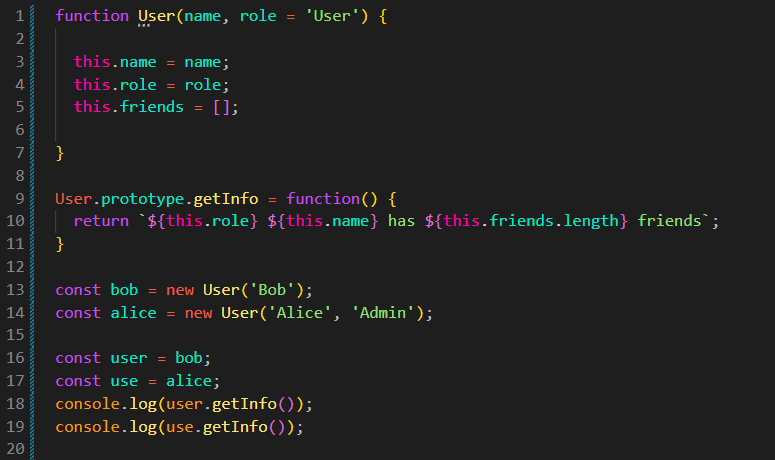

What is Constructor
Intro
Iremos entender como objetos podem ser criados e como a função constructor está relacionada ao uso da palavra-chave new.
Iremos entender como objetos podem ser criados e como a função constructor está relacionada ao uso da palavra-chave new.
JS:

Para entendermos melhor, iremos criar o seguinte código:
const bob = {
name: 'Bob',
role: 'User',
friends: [],
getInfo() {
return `${this.role} ${this.name} has ${this.friends.length} friends.`;
},
};
const alice = {
name: 'Alice',
role: 'Admin',
friends: [],
getInfo() {
return `${this.role} ${this.name} has ${this.friends.length} friends.`;
},
};
console.log(bob.getInfo());
console.log(alice.getInfo()); Podemos observar que temos dois objetos. Cada um possui name, role, um array de amigos e um método.
Atualmente, esses objetos são criados separadamente. Isso significa que precisamos repetir manualmente suas propriedades e métodos.
Quando escrevemos uma aplicação, geralmente precisamos que o código funcione com vários objetos que possuem a mesma estrutura.
Por isso, podemos criar uma forma padronizada de construir esses objetos, garantindo que eles tenham as propriedades necessárias.
Também podemos querer que esses objetos compartilhem métodos comuns, evitando criar uma nova cópia da mesma função para cada objeto.
Agora iremos criar uma função que servirá para criar nossos objetos. Iremos chamá-la de createUser().
Quando desejamos criar vários objetos do mesmo tipo, é comum utilizarmos uma função para padronizar sua criação.
const bob = createUser('Bob');
const alice = createUser('Alice', 'Admin');
function createUser(name, role = 'User') {
const user = {};
user.name = name;
user.role = role;
user.friends = [];
user.getInfo = function() {
return `${this.role} ${this.name} has ${this.friends.length} friends`;
};
return user;
}
const user = bob;
const use = alice;
console.log(user.getInfo());
console.log(use.getInfo());
Temos uma pequena desvantagem nesse método: quando criamos um objeto, cada objeto recebe sua própria função getInfo().
Por exemplo, se tivermos mil objetos, teremos mil funções praticamente idênticas ocupando espaço na memória.
Para evitar essa repetição, podemos colocar os métodos comuns no prototype.
Para isso, iremos criar um objeto chamado baseUser. Nele colocaremos os métodos que serão compartilhados pelos objetos.
Depois, iremos fazer com que cada objeto criado por createUser() tenha baseUser como seu protótipo.
const baseUser = {
getInfo() {
return `${this.role} ${this.name} has ${this.friends.length} friends`;
}
};
const bob = createUser('Bob');
const alice = createUser('Alice', 'Admin');
function createUser(name, role = 'User') {
const user = {};
Object.setPrototypeOf(user, baseUser);
user.name = name;
user.role = role;
user.friends = [];
return user;
}
const user = bob;
const use = alice;
console.log(user.getInfo());
console.log(use.getInfo());
Agora bob e alice não possuem uma cópia própria de getInfo(). Quando chamamos esse método, o JavaScript procura primeiro no próprio objeto. Se não encontrar, procura no seu prototype.
As propriedades como name, role e friends continuam pertencendo a cada objeto individualmente.
O Object.create() permite criar um objeto definindo diretamente qual será o seu prototype.
const baseUser = {
getInfo() {
return `${this.role} ${this.name} has ${this.friends.length} friends`;
}
};
const bob = createUser('Bob');
const alice = createUser('Alice', 'Admin');
function createUser(name, role = 'User') { const user = Object.create(baseUser);
user.name = name;
user.role = role;
user.friends = [];
return user;
}
const user = bob;
const use = alice;
console.log(user.getInfo());
console.log(use.getInfo());
Dessa forma, Object.create(baseUser) cria um novo objeto cujo prototype é o objeto baseUser.
Porém, criar objetos dessa maneira repetidamente pode ser simplificado. Para isso, JavaScript possui a palavra-chave new, que pode ser utilizada com uma função construtora.
Uma função pode ser utilizada como uma função construtora. Por convenção, seu nome começa com letra maiúscula.
Ao utilizarmos new, o JavaScript cria um novo objeto, define seu protótipo e executa a função usando esse novo objeto como this.
function User(name, role = 'User') { this.name = name; this.role = role; this.friends = []; } User.prototype = { getInfo() { return `${this.role} ${this.name} has ${this.friends.length} friends`; } }; const bob = new User('Bob'); const alice = new User('Alice', 'Admin'); const user = bob; const use = alice; console.log(user.getInfo()); console.log(use.getInfo());
O new User() cria um novo objeto e faz com que ele tenha User.prototype como seu protótipo.
Depois, a função User é executada com this apontando para o novo objeto. Por isso podemos escrever this.name, this.role e this.friends.
Se a função construtora retornar um valor primitivo, como 123 ou uma string, esse valor será ignorado e o novo objeto será retornado normalmente.
Porém, se ela retornar explicitamente um objeto, array ou função, esse valor poderá ser retornado no lugar do objeto criado pelo new.
O termo constructor está relacionado à forma como um objeto é criado e inicializado.
Quando utilizamos uma função construtora com new, essa função funciona como um construtor, recebendo os valores necessários para configurar o novo objeto.
Além disso, os objetos criados através de uma função construtora possuem uma propriedade constructor herdada através do prototype.
function User(name) {
this.name = name;
}
const bob = new User('Bob');
console.log(bob.constructor === User); // true
Nesse exemplo, bob.constructor aponta para a função User, porque bob herda essa propriedade de User.prototype.
Uma classe é uma forma mais moderna e organizada de definir como determinados objetos serão criados.
Classes utilizam prototypes por baixo dos panos. Os métodos definidos dentro de uma classe são colocados no prototype da classe.
Portanto, podemos pensar na classe como uma forma mais simples de trabalhar com construtores e prototypes.